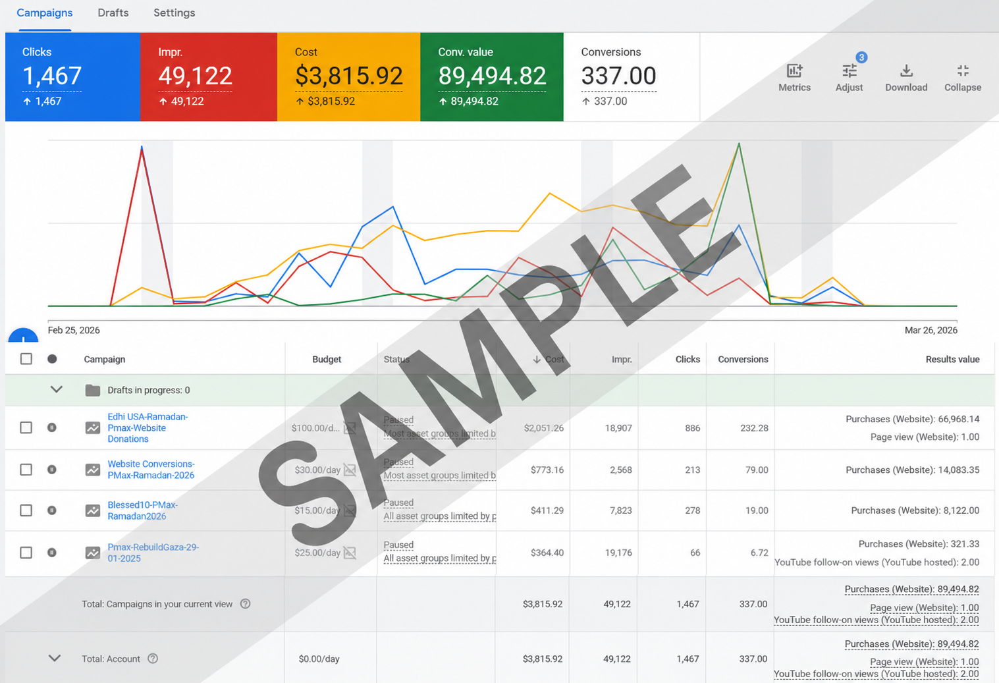
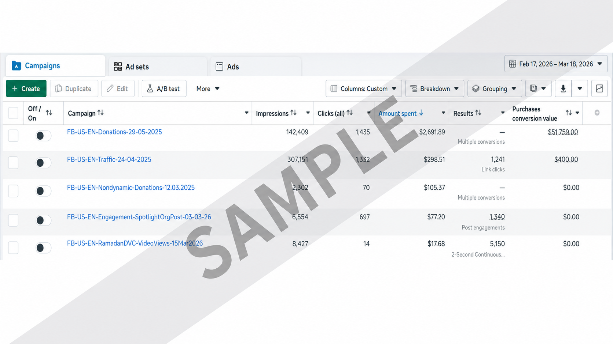
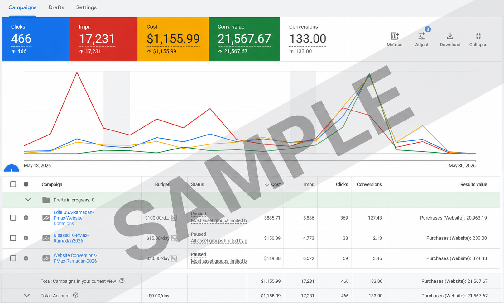
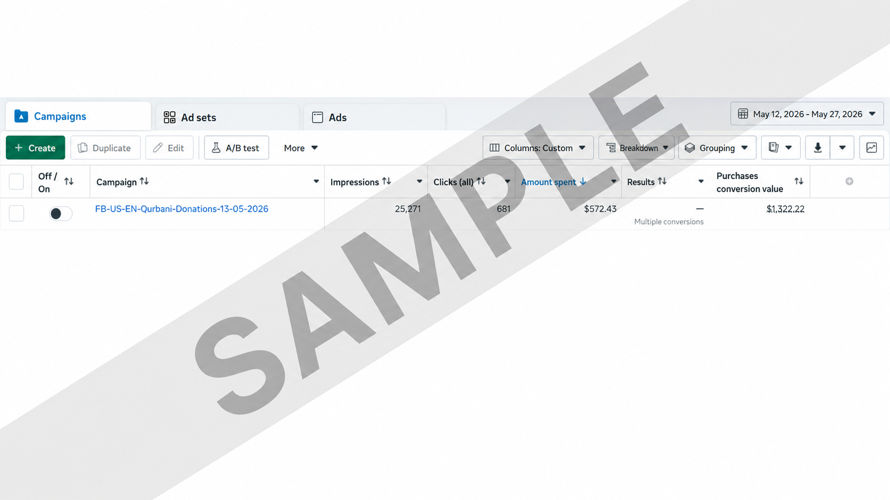

PAID ADVERTISING CASE STUDY
Feeling Blessed
Feeling Blessed is a charitable organization focused on supporting humanitarian and community-focused initiatives through fundraising campaigns. During my time as a Digital Marketing Specialist, I worked across paid advertising, social media, SEO and digital campaigns to help increase online visibility, reach relevant audiences and support fundraising initiatives.
Ramadan 2026
Google Ads + Meta Ads
View campaign ↓ 02Dhul Hijjah 2026
Google Ads + Meta Ads
View campaign ↓PAID ADVERTISING CAMPAIGN
Ramadan 2026
A multi-channel fundraising campaign built across Google Ads and Meta Ads to reach relevant audiences, drive donations and support Feeling Blessed's Ramadan initiatives.
Google Ads
Google Ads campaigns focused on capturing high-intent users searching for opportunities to donate and support Ramadan fundraising initiatives.

Meta Ads
Multiple Meta campaigns were used for donations, traffic, engagement and video awareness, with each campaign optimized for a different objective.

PAID ADVERTISING CAMPAIGN · 2 WEEKS
Dhul Hijjah 2026
A focused two-week fundraising campaign across Google Ads and Meta Ads, designed to reach relevant audiences and generate donations during the Dhul Hijjah period.
Google Ads
Google Ads focused on capturing high-intent users and driving donations during the two-week Dhul Hijjah fundraising period.

Meta Ads
A donation-focused Meta campaign was used to reach relevant audiences and generate additional fundraising conversions during the campaign period.
